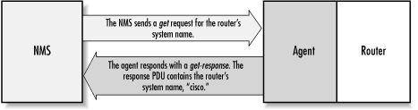
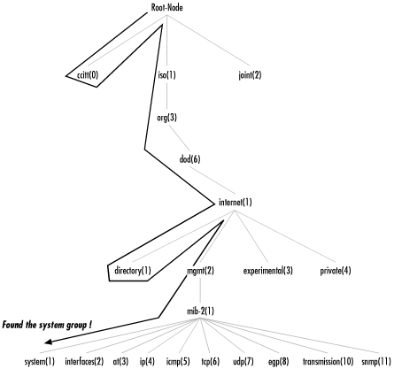
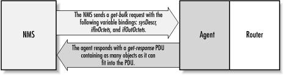
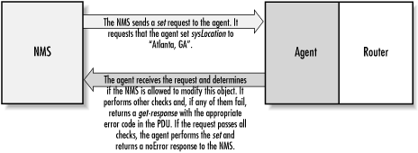
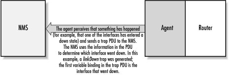

2.6. SNMP Operations
We've discussed how SNMP
organizes information, but we've left out how we actually go
about gathering management information. Now, we're going to
take a look under the hood to see how SNMP does its thing.
The Protocol
Data Unit (PDU) is the message format that managers and
agents use to send and receive information. There is a standard PDU
format for each of the following SNMP operations:
-
get
-
get-next
-
get-bulk (SNMPv2 and SNMPv3)
-
set
-
get-response
-
trap
-
notification (SNMPv2 and SNMPv3)
-
inform (SNMPv2 and SNMPv3)
-
report (SNMPv2 and SNMPv3)
Let's take a look at each of these operations.
2.6.1. The get Operation
The
get
request is initiated by the NMS, which sends the request to the
agent. The agent receives the request and processes it to best of its
ability. Some devices that are under heavy load, such as routers, may
not be able to respond to the request and will have to drop it. If
the agent is successful in gathering the requested information, it
sends a
get-response back to the NMS, where it is
processed. This process is illustrated in
Figure 2-5.

Figure 2-5. get request sequence
How did the agent know what the NMS was looking for? One of the items
in the
get request is a
variable
binding. A variable binding, or varbind, is a list of MIB
objects that allows a request's recipient to see what the
originator wants to know. Variable bindings can be thought of as
OID=value pairs that make it easy for the
originator (the NMS, in this case) to pick out the information it
needs when the recipient fills the request and sends back a response.
Let's look at this operation in action:
$ snmpget cisco.ora.com public .1.3.6.1.2.1.1.6.0
system.sysLocation.0 = ""
TIP:
All the Unix commands
presented in this chapter come from the Net-SNMP agent package
(formerly the UCD-SNMP project), a freely available Unix and Windows
NT agent. Chapter 5, "Network-Management Software" provides a URL from which you
can download the package. The commands in this package are summarized
in Appendix C, "Net-SNMP Tools".
Several things are going on in this
example. First, we're running a command on a Unix host. The
command is called
snmpget. Its main job is to
facilitate the gathering of management data using a
get request. We've given it three
arguments on the command line: the name of the device we would like
to query (
cisco.ora.com), the read-only
community string (
public), and the OID we would
like gathered (
.1.3.6.1.2.1.1.6.0). If we look
back at
Table 2-5 we see that
1.3.6.1.2.1.1 is the
system
group, but there are two more integers at the end of the OID:
.6 and
.0. The
.6 is actually the MIB variable that we wish to
query; its human-readable name is
sysLocation.
In this case, we would like to see what the system location is set to
on the Cisco router. As you can see by the response
(
system.sysLocation.0 =
""), the system location on this router currently
is not set to anything. Also note that the response from
snmpget is in variable binding format,
OID=value.
There is one more thing to look
at. Why does the MIB variable have a
.0 tacked
on the end? In SNMP, MIB objects are defined by the convention
x.y, where
x is the actual OID of the managed object (in
our example,
1.3.6.1.2.1.1.6 ) and
y is the instance identifier. For scalar objects
(that is, objects that aren't defined as a row in a table)
y is always 0. In the case of a table, the
instance identifier lets you select a specific row of the table; 1 is
the first row, 2 is the second row, etc. For example, consider the
ifTable object we looked at earlier in this
chapter. When looking up values in the
ifTable,
we would use a nonzero instance identifier to select a particular row
in the table (in this case, a particular network interface).
TIP:
Graphical NMS applications, which
include most commercial packages, do not use command-line programs to
retrieve management information. We use these commands to give you a
feel for how the retrieval commands work and what they typically
return. The information a graphical NMS retrieves and its retrieval
process are identical to these command-line programs; the NMS just
lets you formulate queries and displays the results using a more
convenient GUI.
The
getcommand is useful for
retrieving a single MIB object at a time. Trying to manage anything
in this manner can be a waste of time, though. This is where the
get-next command comes in. It allows you to
retrieve more than one object from a device, over a period of time.
2.6.2. The get-next Operation
The
get-next
operation lets you issue a sequence of commands to retrieve a group
of values from a MIB. In other words, for each MIB object we want to
retrieve, a separate
get-next request and
get-response are generated. The
get-next command traverses a subtree in
lexicographic order. Since an OID is a sequence of integers,
it's easy for an agent to start at the root of its SMI object
tree and work its way down until it finds the OID it is looking for.
When the NMS receives a response from the agent for the
get-next command it just issued, it issues another
get-next command. It keeps doing this until the
agent returns an error, signifying that the end of the MIB has been
reached and there are no more objects left to get.
If we look at another example, we can see this behavior in action.
This time we'll use a command called
snmpwalk. This command simply facilitates the
get-next procedure for us. It's invoked just
like the
snmpget command, except this time we specify which branch to
start at (in this case, the
system group):
$snmpwalk cisco.ora.com public system
system.sysDescr.0 = "Cisco Internetwork Operating System Software
..IOS (tm) 2500 Software (C2500-I-L), Version 11.2(5), RELEASE
SOFTWARE (fc1)..Copyright (c) 1986-1997 by cisco Systems, Inc...
Compiled Mon 31-Mar-97 19:53 by ckralik"
system.sysObjectID.0 = OID: enterprises.9.1.19
system.sysUpTime.0 = Timeticks: (27210723) 3 days, 3:35:07.23
system.sysContact.0 = ""
system.sysName.0 = "cisco.ora.com"
system.sysLocation.0 = ""
system.sysServices.0 = 6
The
get-next sequence returns seven MIB variables.
Each of these objects is part of the
system
group as it's defined in RFC 1213. We see a system object ID,
the amount of time the system has been up, the contact person, etc.
Given that you've just looked up some object, how does
get-next figure out which object to look up next?
get-next is based on the concept of the
lexicographic ordering of the MIB's object tree. This order is
made much simpler because every node in the tree is assigned a
number. To understand what this means, let's start at the root
of the tree and walk down to the
system node.
To get to the
system
group (OID
1.3.6.1.2.1.1), we start at the root
of the object tree and work our way down.
Figure 2-6 shows the logical progression from the root of
the tree all the way to the
system group. At
each node in the tree, we visit the lowest-numbered branch. Thus,
when we're at the root node, we start by visiting
ccitt. This node has no nodes underneath it, so
we move to the
iso node. Since
iso does have a child we move to that node,
org. The process continues until we reach the
system node. Since each branch is made up of
ascending integers (
ccitt(0) iso(1) join(2), for
example), the agent has no problem traversing this tree structure all
the way down to the
system(1) group. If we were
to continue this walk, we'd proceed to
system.1
(
system.sysLocation),
system.2, and the other objects in the
system group. Next, we'd go to
interfaces(2), and so on.

Figure 2-6. Walking the MIB tree
2.6.3. The get-bulk Operation
SNMPv2 defines the
get-bulk operation, which allows a management
application to retrieve a large section of a table at once. The
standard
get operation can attempt to retrieve
more than one MIB object at once, but message sizes are limited by
the agent's capabilities. If the agent can't return all
the requested responses, it returns an error message with no data.
The
get-bulk operation, on the other hand, tells
the agent to send as much of the response back as it can. This means
that incomplete responses are possible. Two fields must be set when
issuing a
get-bulk command: nonrepeaters and
max-repetitions. Nonrepeaters tells the
get-bulk
command that the first
N objects can be
retrieved with a simple
get-next operation.
Max-repetitions tells the
get-bulk command to
attempt up to
M get-next
operations to retrieve the remaining objects.
Figure 2-7 shows the
get-bulk command
sequence.

Figure 2-7. get-bulk request sequence
In
Figure 2-7,
we're requesting three bindings:
sysDescr,
ifInOctets, and
ifOutOctets. The total number of variable
bindings that we've requested is given by the formula
N + (M * R), where
N is the
number of nonrepeaters (i.e., scalar objects in the request -- in
this case 1, because
sysDescr is the only scalar
object),
M is max-repetitions (in this case,
we've set it arbitrarily to 3), and
R is
the number of nonscalar objects in the request (in this case 2,
because
ifInOctets and
ifOutOctets are both nonscalar). Plugging in the
numbers from this example, we get 1 + (3 * 2) = 7, which is the total
number of variable bindings that can be returned by this
get-bulk request.
The Net-SNMP package comes with a
command for issuing
get-bulk queries. If we
execute this command using all the parameters previously discussed,
it will look like the following:
$ snmpbulkget -v2c -B 1 3 linux.ora.com public sysDescr ifInOctets ifOutOctets
system.sysDescr.0 = "Linux linux 2.2.5-15 #3 Thu May 27 19:33:18 EDT 1999 i686"
interfaces.ifTable.ifEntry.ifInOctets.1 = 70840
interfaces.ifTable.ifEntry.ifOutOctets.1 = 70840
interfaces.ifTable.ifEntry.ifInOctets.2 = 143548020
interfaces.ifTable.ifEntry.ifOutOctets.2 = 111725152
interfaces.ifTable.ifEntry.ifInOctets.3 = 0
interfaces.ifTable.ifEntry.ifOutOctets.3 = 0
Since
get-bulk is an
SNMPv2 command, you have to tell
snmpgetbulk to
use an SNMPv2 PDU with the
-v2c option. The
nonrepeaters and max-repetitions are set with the
-B 1
3 option. This sets nonrepeaters to 1 and max-repetitions
to 3. Notice that the command returned seven variable bindings: one
for
sysDescr and three each for
ifInOctets and
ifOutOctets.
2.6.4. The set Operation
The
set command
is used to change the value of a managed object or to create a new
row in a table. Objects that are defined in the MIB as read-write or
write-only can be altered or created using this command. It is
possible for an NMS to set more than one object at a time.

Figure 2-8. set request sequence
Figure 2-8 shows the
set request sequence. It's similar to the
other commands we've seen so far, but it is actually changing
something in the device's configuration, as opposed to just
retrieving a response to a query. If we look at an example of an
actual
set, you will see the command take place.
The following example queries the
sysLocation
variable, then sets it to a value:
$ snmpget cisco.ora.com public system.sysLocation.0
system.sysLocation.0 = ""
$ snmpset cisco.ora.com private system.sysLocation.0 s "Atlanta, GA"
system.sysLocation.0 = "Atlanta, GA"
$ snmpget cisco.ora.com public system.sysLocation.0
system.sysLocation.0 = "Atlanta, GA"
The first command is the familiar
get command, which displays the current value of
sysLocation. In one of the previous examples we
saw that it was undefined; this is still the case. The second command
is
snmpset. For this command, we supply the
hostname, the read-write community string
(
private), and the variable we want to set
(
system.sysLocation.0), together with its new
value (
s "Atlanta,
GA"). The
s tells
snmpset that we want to set
the value of
sysLocation to a
string; and
"Atlanta, GA" is
the new value itself. How do we know that
sysLocation requires a string value? The
definition of
sysLocation in RFC 1213 looks like
this:
sysLocation OBJECT-TYPE
SYNTAX DisplayString (SIZE (0..255))
ACCESS read-write
STATUS mandatory
DESCRIPTION
"The physical location of this node (e.g., 'telephone closet,
3rd floor')."
::= { system 6 }
The
SYNTAX for
sysLocation is
DisplayString
(SIZE (0..255)), which means
that it's a string with a maximum length of 255 characters. The
snmpset command succeeds and reports the new value
of
sysLocation. But just to confirm, we run a
final
snmpget, which tells us that the
set actually took effect. It is possible to set
more than one object at a time, but if any of the sets fail, they all
fail (i.e., no values are changed). This behavior is intended.
2.6.5. get, get-next, get-bulk, and set Error Responses
Error responses help you determine
wether your
get or
set request
was processed correctly by the agent. The
get,
get-next, and
set operations
can return the error responses shown in
Table 2-6.
The error status for each error is show in parentheses.
Table 2-6. SNMPv1 Error Messages
|
SNMPv1 Error Message
|
Description
|
noError(0)
|
There was no problem performing the request.
|
tooBig(1)
|
The response to your request was too big to fit into one response.
|
noSuchName(2)
|
An agent was asked to get or set an
OID that it can't find; i.e., the OID doesn't exist.
|
badValue(3)
|
A read-write or write-only object was set to an inconsistent value.
|
readOnly(4)
|
This error is generally not used. The noSuchName
error is equivalent to this one.
|
genErr(5)
|
This is a catch-all error. If an error occurs for which none of the
previous messages is appropriate, a genError is
issued.
|
The SNMPv1 error messages are not very robust. In an attempt to fix
this problem, SNMPv2 defines additional error responses that are
valid for get, set,
get-next, and get-bulk
operations, provided that both the agent and NMS support SNMPv2.
These responses are listed in Table 2-7.
Table 2-7. SNMPv2 Error Messages
|
SNMPv2 Error Message
|
Description
|
noAccess(6)
|
A set to an inaccessible variable was attempted.
This typically occurs when the variable has an
ACCESS type of not-accessible.
|
wrongType(7)
|
An object was set to a type that is different from its definition.
This error will occur if you try to set an object that is of type
INTEGER to a string, for example.
|
wrongLength(8)
|
An object's value was set to something other than what it calls
for. For instance, a string can be defined to have a maximum
character size. This error occurs if you try to set a string object
to a value that exceeds its maximum length.
|
wrongEncoding(9)
|
A set operation was attempted using the wrong
encoding for the object being set.
|
wrongValue(10)
|
A variable was set to a value it
doesn't understand. This can occur when a read-write is defined
as an enumeration, and you try to set it to a value that is not one
of the enumerated types.
|
noCreation(11)
|
You tried to set a nonexistent variable or create a variable that
doesn't exist in the MIB.
|
inconsistentValue
|
A MIB variable is in an inconsistent state, and is not accepting any
set requests.
|
resourceUnavailable(13)
|
No system resources are available to perform a set.
|
commitFailed(14)
|
This is a catch-all error for set failures.
|
undoFailed(15)
|
A set failed and the agent was unable to roll back
all the previous sets up until the point of
failure.
|
authorizationError(16)
|
An SNMP command could not be authenticated; in other words, someone
has supplied an incorrect community string.
|
notWritable(17)
|
A variable will not accept a set, even though it
is supposed to.
|
inconsistentName(18)
|
You attempted to set a variable, but that attempt failed because the
variable was in some kind of inconsistent state.
|
2.6.6. SNMP Traps
A trap
is a way for an agent to tell the NMS that something bad has
happened. In the
Section 1.3, "Managers and Agents" of
Chapter 1, "What Is SNMP?" we explored the notion of traps at a general
level; now we'll look at them in a bit more detail.
Figure 2-9 shows the trap-generation sequence.

Figure 2-9. Trap generation
The trap originates from the
agent and is sent to the trap destination, as configured within the
agent itself. The trap destination is typically the IP address of the
NMS. No acknowledgment is sent from the NMS to the agent, so the
agent has no way of knowing if the trap makes it to the NMS. Since
SNMP uses UDP, and since traps are designed to report problems with
your network, traps are especially prone to getting lost and not
making it to their destinations. However, the fact that traps can get
lost doesn't make them any less useful; in a well-planned
environment, they are an integral part of network management.
It's better for your equipment to try to tell you that
something is wrong, even if the message may never reach you, than
simply to give up and let you guess what happened. Here are a few
situations that a trap might report:
-
A network interface on the device (where the agent is running) has
gone down.
-
A network interface on the device (where the agent is running) has
come back up.
-
An incoming call to a modem rack was unable to establish a connection
to a modem.
-
The fan on a switch or router has failed.
When an NMS receives a trap, it needs to
know how to interpret it; that is, it needs to know what the trap
means and how to interpret the information it carries. A trap is
first identified by its generic trap number. There are seven generic
trap numbers (0-6), shown in
Table 2-8. Generic
trap 6 is a special catch-all category for
"enterprise-specific" traps, which are traps defined by
vendors or users that fall outside of the six generic trap
categories. Enterprise-specific traps are further identified by an
enterprise ID (i.e., an object ID somewhere in the
enterprises branch of the MIB tree,
iso.org.dod.internet.private.enterprises) and a
specific trap number chosen by the enterprise that defined the trap.
Thus, the object ID of an enterprise-specific trap is
enterprise-id.specific-trap-number. For example,
when Cisco defines special traps for its private MIBs, it places them
all in its enterprise-specific MIB tree
(
iso.org.dod.internet.private.enterprises.cisco).
As we'll see in
Chapter 10, "Traps", you are
free to define your own enterprise-specific traps; the only
requirement is that you register your own enterprise number with
IANA.
A trap is usually packed with
information. As you'd expect, this information is in the form
of MIB objects and their values; as mentioned earlier, these
object-value pairs are known as variable bindings. For the generic
traps 0 through 5, knowledge of what the trap contains is generally
built into the NMS software or trap receiver. The variable bindings
contained by an enterprise-specific trap are determined by whomever
defined the trap. For example, if a modem in a modem rack fails, the
rack's agent may send a trap to the NMS informing it of the
failure. The trap will most likely be an enterprise-specific trap
defined by the rack's manufacturer; the trap's contents
are up to the manufacturer, but it will probably contain enough
information to let you determine exactly what failed (for example,
the position of the modem card in the rack and the channel on the
modem card).
Table 2-8. Generic Traps
|
Generic Trap Name and Number
|
Definition
|
|
coldStart (0)
|
Indicates that the agent has
rebooted. All management variables will be reset; specifically,
Counters and Gauges will be
reset to zero (0). One nice thing about the
coldStart trap is that it can be used to
determine when new hardware is added to the network. When a device is
powered on, it sends this trap to its trap destination. If the trap
destination is set correctly (i.e., to the IP address of your NMS)
the NMS can receive the trap and determine whether it needs to manage
the device.
|
|
warmStart (1)
|
Indicates that the agent has
reinitialized itself. None of the management variables will be reset.
|
|
linkDown (2)
|
Sent when an interface on a device
goes down. The first variable binding identifies which interface went
down.
|
|
linkUp (3)
|
Sent when an interface on a device comes back up. The first variable
binding identifies which interface came back up.
|
|
authenticationFailure (4)
|
Indicates that someone has tried to
query your agent with an incorrect community string; useful in
determining if someone is trying to gain unauthorized access to one
of your devices.
|
|
egpNeighborLoss (5)
|
Indicates that an Exterior Gateway Protocol
(EGP) neighbor has gone down.
|
|
enterpriseSpecific (6)
|
Indicates that the trap is enterprise-specific. SNMP vendors and
users define their own traps under the private-enterprise branch of
the SMI object tree. To process this trap properly, the NMS has to
decode the specific trap number that is part of the SNMP message.
|
In Chapter 1, "What Is SNMP?" we mentioned that RFC 1697 is the
RDBMS MIB. One of traps defined by this MIB is
rdbmsOutOfSpace :
rdbmsOutOfSpace TRAP-TYPE
ENTERPRISE rdbmsTraps
VARIABLES { rdbmsSrvInfoDiskOutOfSpaces }
DESCRIPTION
"An rdbmsOutOfSpace trap signifies that one of the database
servers managed by this agent has been unable to allocate
space for one of the databases managed by this agent. Care
should be taken to avoid flooding the network with these traps."
::= 2
The enterprise is
rdbmsTraps and the specific
trap number is 2. This trap has one variable binding,
rdbmsSrvInfoDiskOutOfSpaces. If we look
elsewhere in the MIB, we will find that this variable is a scalar
object. Its definition is:
rdbmsSrvInfoDiskOutOfSpaces OBJECT-TYPE
SYNTAX Counter
ACCESS read-only
STATUS mandatory
DESCRIPTION
"The total number of times the server has been unable to obtain
disk space that it wanted, since server startup. This would be
inspected by an agent on receipt of an rdbmsOutOfSpace trap."
::= { rdbmsSrvInfoEntry 9 }
The
DESCRIPTION for this object indicates why the
note about taking care to avoid flooding the network (in the
DESCRIPTION text for the
TRAP-TYPE) is so important. Every time the RDBMS
is unable to allocate space for the database, the agent will send a
trap. A busy (and full) database could end up sending this trap
thousands of times a day.
Some commercial RDBMS vendors, such as Oracle, provide an SNMP agent
with their database engines. Agents such as these typically have
functionality above and beyond that found in the RDBMS MIB.
2.6.7. SNMP Notification
In an effort to standardize the PDU format of SNMPv1 traps (recall
that SNMPv1 traps have a different PDU format from
get and
set), SNMPv2 defines a
NOTIFICATION-TYPE. The PDU format for
NOTIFICATION-TYPE is identical to that for
get and
set. RFC 2863
redefines the
linkDown generic notification type
like so:
linkDown NOTIFICATION-TYPE
OBJECTS { ifIndex, ifAdminStatus, ifOperStatus }
STATUS current
DESCRIPTION
"A linkDown trap signifies that the SNMPv2 entity, acting in an
agent role, has detected that the ifOperStatus object for one
of its communication links left the down state and transitioned
into some other state (but not into the notPresent state). This
other state is indicated by the included value of ifOperStatus."
::= { snmpTraps 3 }
The list of bindings is called
OBJECTS rather than
VARIABLES, but little else has changed. The first
object is the specific interface (
ifIndex) that
transitioned from the
linkDown condition to some
other condition. The OID for this trap is
1.3.6.1.6.3.1.1.5.3, or
iso.org.dod.internet.snmpV2.snmpModules.snmpMIB.snmpMIBObjects.snmpTraps.linkDown.
2.6.8. SNMP inform
Finally, SNMPv2 provides an
inform mechanism, which allows for
manager-to-manager communication. This operation can be useful when
the need arises for more than one NMS in the network. When an
inform is sent from one NMS to another, the
receiver sends a response to the sender acknowledging receipt of the
event. This behavior is similar to that of the
get
and
setrequests. Note that
an SNMP
inform can be used to send SNMPv2 traps to
an NMS. If you use an
inform for this purpose, the
agent will be notified when the NMS receives the trap.
2.6.9. SNMP report
The
report operation was defined in the draft version
SNMPv2 but never implemented. It is now part of the SNMPv3
specification and is intended to allow SNMP engines to communicate
with each other (mainly to report problems with processing SNMP
messages).
 |  |  |
| 2.5. A Closer Look at MIB-II |  | 2.7. Host Management Revisited |

Copyright © 2002 O'Reilly & Associates. All rights reserved.